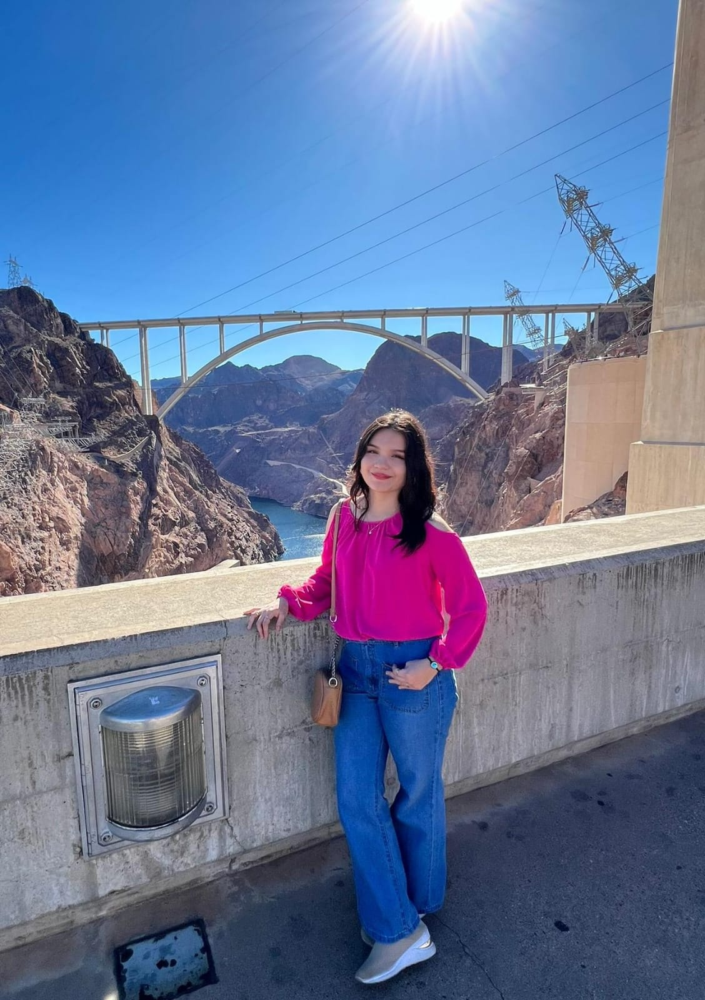

Camila Estefania Portugal Pickling | WDD 130
Hello my name is Camila Estefania Portugal Pickling, I'm from Iquitos-Peru, I'm 18 years old, I like to play the guitar, listen music, watchg k-dramas and dance. I'm studying programming with functions and web development. I want to go on a mission next year. I have 2 older sisters and I'm the youngest, I have been living in my city Iquitos for 12 years and 5 months ago I visited United State for 3 months. My favorite colors are green and pink and my favorite food is "Pollo a la Brasa". I have two cats and a dog, my dog is named Thobby and is 8 years old, the first cat is 3 years old and her name is Laly, and my second cat is 2 years old and her name is Scarly. I was in the Pathway program for a year, and now I'm studying at BYU (software development) to get a degree, lamentably in my city there is just one university, and education is poor, that's why I chose BYU, because I want to have a better education, I want to be able to become someone with a degree, and a job. I have a calling in the Church, I'm the secretary of the Young Women presidency, I enjoy working with young women, they always have creative ideas, and they're really funny girls.